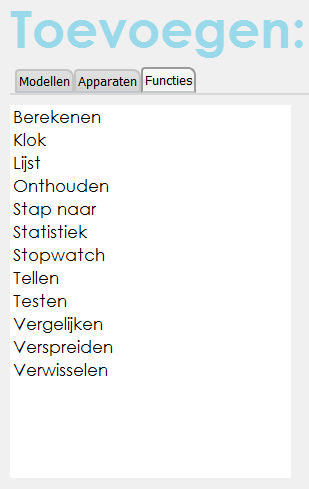

Functiekaart
Lijst van beschikbare functies:

Hieronder vind je de beschrijving van iedere functie.
Onder de naam van de functie vind je achtereenvolgens de tegel op het blad instellingen, de programmategel,
de signalen die de functie uitzendt en welke constante signalen kunnen worden gebruikt.
Bij sommige programmategels staat blauwe tekst in een vakje ingevuld.
Dit zijn standaardwaardes. Wanneer niets is ingevuld betekent dit geen tekst of het getal 0.
Berekenen
Deze functie voert een berekening uit met de signalen of waarden die achter Waarde A en Waarde B zijn ingevuld.
In de lijst van constante signalen vind je de mogelijke berekeningen. Sleep één ervan naar het invulvakje achter Functie.
Klok
De functie klok zend alleen signalen uit met de tijd.
Lijst
Je kunt met deze functie een lijst van waardes bijhouden. De lijst blijft gedurende het hele programma actief.
Het is mogelijk om waardes aan de lijst toe te voegen en er weer vanaf te halen.
Iedere waarde krijgt automatisch een index-nummer, dat de positie in de lijst weergeeft.
De waardes in de lijst kun je gebruiken met het signaal Waarde.
Zorg ervoor dat op de programmategel achter het vakje Signaal index het gewenste index-nummer is ingevuld.
Het signaal Waarde zendt steeds de waarde bij deze index uit.
De functie Lijst houdt het gemiddelde, het maximum en het minimum van de waardes in de lijst bij.
Dit is een verschil met de functie Statistiek.
Die doet dit ook, maar dan voor één bepaald signaal.
Let op! Omdat een lijst veel geheugenruimte inneemt, kan het programma vastlopen bij teveel waardes in de lijst.
Daarom is het niet mogelijk om meer dan één waarde per stap toe te voegen of te schrappen.
Ook dit is een verschil met de functie Statistiek.
Statistiek houdt geen lijst bij en je loopt daar ook niet het risico dat het geheugen van de computer vol loopt.
Onthouden
Vergeleken bij de functie Lijst is deze functie erg beperkt. Het enige wat hij doet, is maximaal zes waardes
onthouden. Dat kan bijvoorbeeld handig zijn om een bepaalde waarde van een sensor vast te houden. Deze waardes veranderen
namelijk voortdurend. De functie Onthouden kan bovendien een waarde meenemen naar een volgende stap.
Over het algemeen worden signaalwaardes bij de overgang van de ene naar de andere stap op een nul-stand gezet en
ben je de eerdere waarde kwijt.
Stap naar
Programmastappen worden niet automatisch na elkaar uitgevoerd. Om met een andere stap verder te gaan, moet je de functie Stap naar gebruiken.
Zodra het signaal achter Wanneer? actief wordt, gaat het programma verder met de stap, die is ingevuld achter Ga naar stap.
Met de functie Stap naar kun je naar iedere willekeurige stap springen - zowel vooruit als achteruit in het progamma.
Statistiek
De functie Statistiek houdt de gemiddelde waarde, het maximum en het minimum van een signaal bij.
De waardes beslaan de periode tussen Start wanneer? en Stop wanneer?.
Wanneer achter Bewaar het constante signaal Ja is ingevuld, blijven de waardes na de meetperiode beschikbaar.
Bij Nee worden de waardes na afloop op nul gezet.
Als de waardes zijn bewaard, kunnen ze in een volgende stap worden aangevuld met nieuwe waardes.
Stopwatch
Deze functie wacht een aantal milliseconden vanaf het moment dat het signaal achter Start wanneer? actief is.
Als de tijd verstreken is wordt het signaal Klaar uitgezonden. De wachttijd vul je in achter Duur.
In één seconde zitten 1000 milliseconden.
Tellen
Deze functie maakt het mogelijk om bij te houden hoe vaak een signaal optreedt (vul 1 in achter Verhoog hoeveel) of
om de som van een signaal te nemen (sleep het signaal achter Verhoog hoeveel).
Het totaal wordt in Tellerstand bijgehouden. Vooraf wordt de teller op de Beginstand gezet.
Het tellen start met het signaal achter Start wanneer? en stopt met het signaal Stop wanneer? of
als de stand achter Stop bij stand is bereikt.
Deze stand kan op twee manieren worden bereikt:
1) als de teller wordt verhoogd en de waarde erbovenuit komt of 2) als de teller wordt verlaagd en de waarde komt eronder te liggen.
Wanneer het tellen stopt wordt het signaal Klaar uitgezonden.
Testen
Deze functie zul je voornamelijk gebruiken als je programma moet reageren op zowel het optreden als het uitblijven van een signaal.
Afhankelijk van een testsignaal worden twee andere signalen afgeven.
Als het testsignaal actief is, wordt het signaal achter Test gelukt uitgezonden.
Anders wordt het signaal achter Test mislukt uitgezonden.
Vergelijken
Je kunt twee signalen met elkaar vergelijken maar ook een signaal en een ingevulde waarde.
De functie zendt uit of de signalen groter, kleiner, gelijk of ongelijk zijn aan elkaar.
Verspreiden
Het signaal achter Wanneer? geeft het startschot om Signaal A, Signaal B en Signaal C uit te zenden.
De inhoud van deze drie signalen wordt bepaald op de programmategel achter Zend signaal A, enz.
Verwisselen
Terwijl je bij de functie Testen één signaal test, kun je hier meer signalen gebruiken.
Het signaal achter Zend signaal wordt doorgegeven wanneer het signaal achter Als signaal actief is.
Als geen van de signalen achter Als signaal actief is, wordt het signaal achter Anders zend doorgegeven.
Het doorgegeven signaal vind je in de lijst met uitgezonden signalen als het signaal Actie.